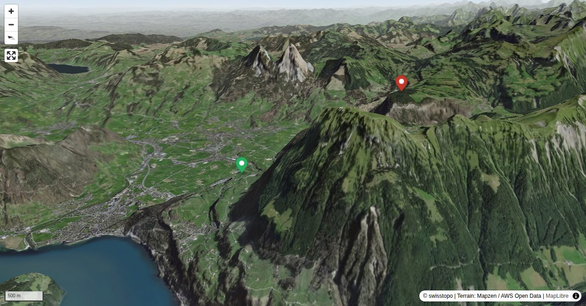

A grand ascent. At first glance the north flank of the Fronalpstock appears somewhat repellent, but it proves an easy climb. Unsurprisingly, the view from the summit is amazing; above Lake Lucerne, the Fronalpstock is known to have one of the best panoramic views in the region.
Informationen zu den Transportanlagen:stoos-muotatal.ch/train/stoosbahnen/
Quick Facts
| Summit elevation | 1920 m |
|---|---|
| Difficulty | SAC T4- Check the route notes below for terrain and commitment level. Guide |
| Trailhead | Morschach Talstation |
| Distance | 4.8 km (out-and-back) |
| Total ascent | ~1125 m |
| Elevation range | 794-1919 m |
| Route sources | SAC Route Portal |
Photos


Route Map & Elevation
i
i
sac_scale (precise T1–T6) with
swissTLM3D Wanderwegart
fallback where OSM is silent (coarser T2/T3 and T4+ buckets).
Coverage: OSM 87.1% · swisstopo 8.7% · unknown 3.0%.Elevations computed from the inlined GPX track (SwissTopo height API).
Loading forecast…
3D Terrain View

Route Details
From Morschach via Chälen
- TODO: Step 1 description.
- TODO: Step 2 description.
Terrain & safety
Route marked throughout; from "Eu" with white-blue-white paint. Some easy, ever-so-slightly-exposed bits of scrambling, but these are secured with fixed ropes. Main difficulties limited to around 100 vertical metres. The route is officially closed from late autumn to early summer (some fixed ropes are removed at the end of the hiking season). Due to the shady aspect of the the terrain it is often damp - and it is very tricky with wet or old snow. In dry conditions however, it is an ideal route for all those keen to try alpine hiking.
Source: SAC Route Portal
Getting There & Back
Start: Morschach Talstation (798 m)
Directions from to Morschach Talstation
End: Fronalpstock, Bergstation (1906 m)
Directions from Fronalpstock, Bergstation back to
Field Reference
| Trailhead | Morschach Talstation | 46.99010, 8.63820 |
|---|---|---|
| Summit | Fronalpstock Sz Morschach (1920 m) | 46.96820, 8.63727 |
Coordinates are WGS84 decimal degrees (lat, lon). Emergency: 112 (general) or 1414 (Rega air rescue). Page URL: